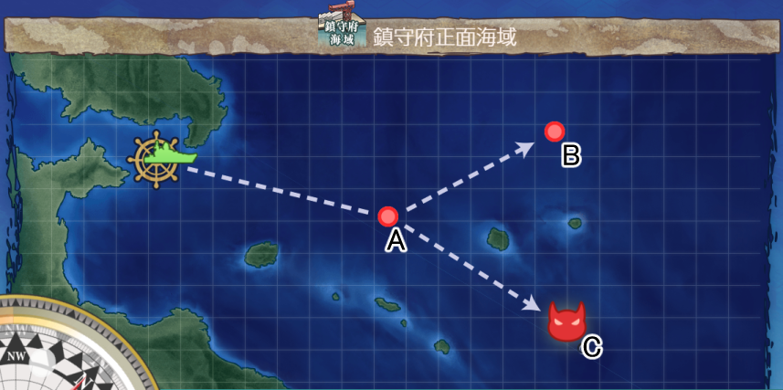

羅針盤シミュレータ
推奨編成
1-1.鎮守府正面海域
1-2.南西諸島沖
1-3.製油所地帯沿岸
1-4.南西諸島防衛線
1-5.鎮守府近海
1-6.鎮守府近海航路
2-1.南西諸島近海
2-2.バシー海峡
2-3.東部オリョール海
2-4.沖ノ島海域
2-5.沖ノ島沖
3-1.モーレイ海
3-2.キス島沖
3-3.アルフォンシーノ方面
3-4.北方海域全域
3-5.北方AL海域
7-1.ブルネイ泊地沖
7-2.タウイタウイ泊地沖
4-1.ジャム島沖
4-2.カレー洋海域
4-3.リランカ島
4-4.カスガダマ島
4-5.カレー洋リランカ島沖
5-1.南方海域前面
5-2.珊瑚諸島沖
5-3.サブ島沖海域
5-4.サーモン海域
5-5.サーモン海域北方
6-1.中部海域哨戒線
6-2.MS諸島沖
6-3.グアノ環礁沖海域
6-4.中部北海域ピーコック島沖
6-5.KW環礁沖海域

駆逐艦
駆逐艦
駆逐艦
駆逐艦
なし
なし
なし
戦艦
正規空母
軽空母
重巡洋艦
軽巡洋艦
駆逐艦
海防艦
潜水艦
水上機母艦
補給艦
秋津洲
大鯨
能動分岐
シミュレート
決定
シミュレートボタンを押してください
※航巡、雷巡は重巡としています
お問い合わせ